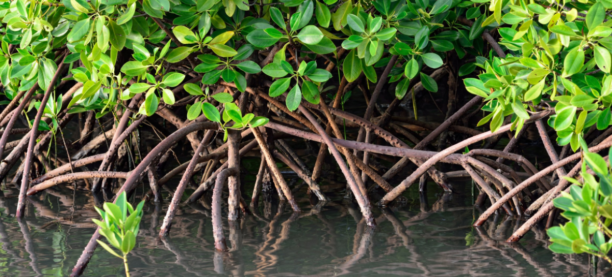
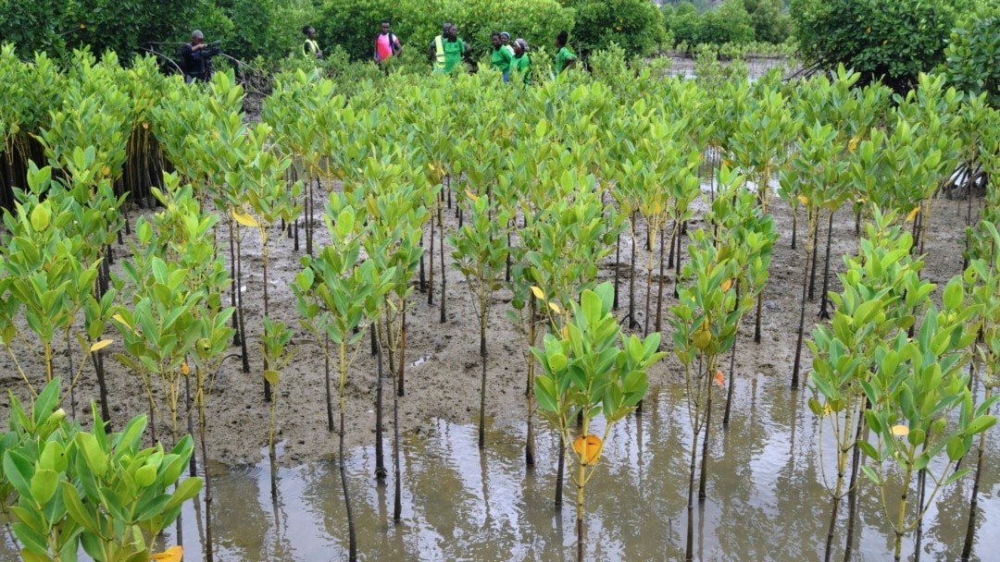

Os mangais (ou tarrafes) na Guiné-Bissau cobrem cerca de 10% do território nacional, situando o país entre os maiores detentores deste ecossistema na África Ocidental. Essenciais para a biodiversidade e proteção costeira contra a erosão, estes ecossistemas são geridos pelo Instituto da Biodiversidade e das Áreas Protegidas (IBAP), destacando-se o Parque Natural dos Tarrafes do Rio Cacheu. Enfrentam ameaças de degradação, mas são fundamentais para o sustento local e mitigação das alterações climáticas.

Importância e Características:
Biodiversidade: Funcionam como viveiros naturais para peixes, moluscos e crustáceos, além de servirem de habitat para diversas espécies.
Proteção Costeira: Atuam como barreiras naturais contra tempestades, erosão e cheias.
Serviços de Ecossistema: Capturam carbono e fornecem recursos como madeira, lenha e áreas de pesca para as comunidades.
Espécies Comuns: Predominam espécies do género Rhizophora (mangal-vermelho ou tarrafe-vermelho) e Avicennia (mangal-branco).
A Guiné-Bissau tem uma das maiores proporções de mangal do mundo.
A Plataforma sobre Paisagens de Mangal da Guiné-Bissau (PLANTA) foi criada para coordenar esforços de conservação e restauração de áreas degradadas.
A conversão de mangais em campos de arroz é um desafio histórico para a gestão da biodiversidade.
Zonas Importantes:
Parque Natural dos Tarrafes do Rio Cacheu: Abrange 88.615 ha, com vasta cobertura de mangal.
Regiões de Catió, Bedanda e Tite (sul) e zonas de ilhas (Caravela) também possuem grandes extensões de mangais.
A proteção dos mangais é considerada uma prioridade nacional para a segurança alimentar e sustentabilidade ambiental.

Os mangais (ou manguezais) na Guiné-Bissau cobrem cerca de 10% do território nacional, representando uma das maiores proporções mundiais e o segundo ou terceiro maior ecossistema de mangal em África. Estes ecossistemas costeiros, vitais para a biodiversidade, proteção da costa e economia local, enfrentam ameaças por corte, sobre-exploração e transformação para agricultura. Projetos de restauração visam recuperar áreas degradadas. Importância e Características dos Mangais na Guiné-Bissau: Extensão: A Guiné-Bissau possui uma vasta rede de mangais, com destaque para o Parque Natural dos Mangais do Rio Cacheu, que cobre 88.615 hectares. Biodiversidade: São habitats essenciais para a reprodução e proteção de várias espécies de peixes, moluscos e crustáceos. Papel Socioeconómico: Fornecem madeira, lenha, alimentos, mel e produtos medicinais, sendo cruciais para a subsistência das populações costeiras. Proteção Ambiental: Agem como barreiras naturais contra a erosão, tempestades e reduzem o impacto de fenómenos climáticos extremos, além de sequestrarem carbono. Espécies Comuns: Incluem o mangal-vermelho (Rhizophora mangle, R. harrisonii, R. racemosa), mangal-preto (Avicennia germinans), e mangal-branco (Laguncularia racemosa). Principais Ameaças e Conservação: Ameaças: Aumento do corte em zonas de acampamento de pescadores (Cacine, ilhas como Caravela, e áreas no sul) e a conversão de áreas de mangal para a rizicultura. Impacto das Alterações Climáticas: A subida do nível do mar e a irregularidade das chuvas afetam estes ecossistemas. Esforços de Conservação: O governo, com apoio da ONU e do IBAP (Instituto da Biodiversidade e das Áreas Protegidas), implementa projetos para restaurar cerca de 1500 hectares de mangal em campos de arroz abandonados.
Visa conciliar a produção de arroz com a preservação dos mangais, promovendo a restauração de áreas de mangue degradadas para garantir a segurança alimentar e a mitigação das mudanças climáticas.